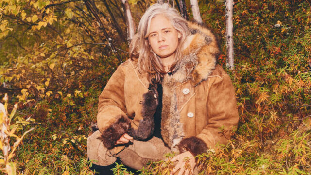
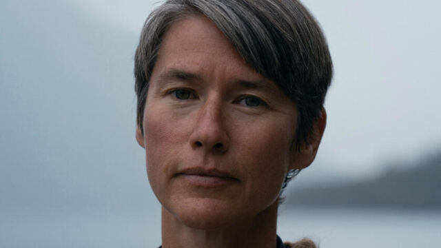
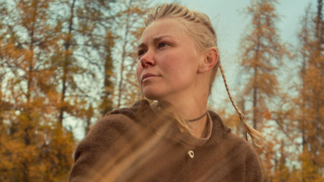
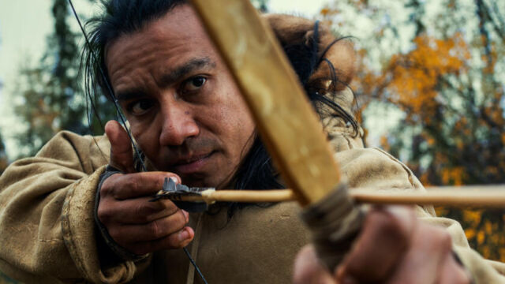
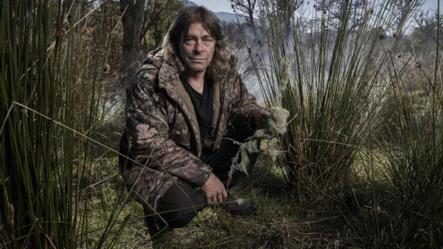
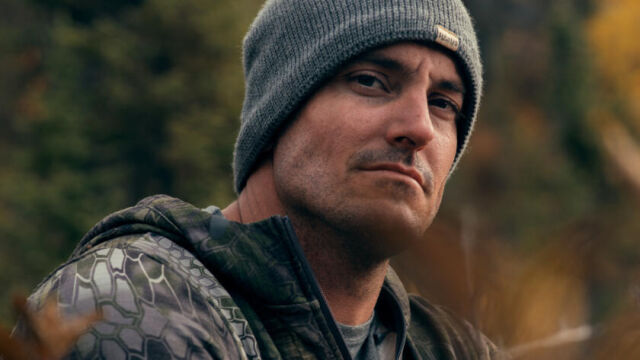

1stWinner
Woniya Thibeault
Ancestral Skills Teacher
- Lasted
- 50 days
- Age
- 45
- From
- Grass Valley, California
Alone: Frozen
Coast, Labrador, Canada · Premiered 11 Aug 2022

Days each survivalist lasted, in finishing order, and why they tapped out. Every season page uses the same 0–100 day scale so seasons can be compared at a glance.





Who they are, where they're from and the ten items they carried in.
Ancestral Skills Teacher
Educational Consultant
Ancestral Living Skills Instructor
Primitive Skills Instructor
Drywaller
Sniper & Survival Skills Instructor
How many survivalists chose each item (items grouped into simplified categories).
Air dates, survivalists remaining at the start of each episode, viewers and IMDb rating.
| Ep | Title & opening quote | Aired | Remaining | Viewers (M) | IMDb |
|---|---|---|---|---|---|
| 1 | 50 Day Freeze | 11 Aug 2022 | 6 | — | |
| 2 | Frost Bound | 18 Aug 2022 | 5 | — | |
| 3 | The Edge | 25 Aug 2022 | — | — | |
| 4 | Bone Cold | 1 Sep 2022 | — | — | |
| 5 | Outfoxed | 15 Sep 2022 | — | — | |
| 6 | On Thin Ice | 15 Sep 2022 | — | — | |
| 7 | The Last Hope | 22 Sep 2022 | — | — | |
| 8 | The Bitter End | 22 Sep 2022 | — | — |